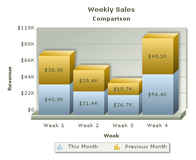

| Creating Stacked Chart |
|
FusionCharts XT offers Stacked Chart – a type of multi-series chart where multiple datasets are stacked one above the other. Have a look at the image below to have an idea how a Stacked Chart looks like: Before you go further with this page, we recommend you to please see the previous pages Creating First Chart and Creating Multi-series chart as we start off from concepts explained in that page. The process of generating Stacked chart is same as multi-series chart. The only difference is here we need to specify a different chart type. Open and modify the multi-series chart you have created in the previous page like this: |
<%@LANGUAGE="VBSCRIPT"%>
<%
'Include FusionCharts ASP Class
%>
<!--#include file="../Class/FusionCharts_Gen.asp"-->
<%
dim FC
'Create FusionCharts ASP class object
set FC = new FusionCharts
'Set chart type to Stacked Column2D chart
Call FC.setChartType("StackedColumn3D")
...
|
As you can see, while creating the chart object, we have only changed the chart type to stackedColumn3D FC = new FusionCharts
Call FC.setChartType("StackedColumn3D")
This is the trick. You can see that, instead of a multiseries chart, we render a stacked chart. Please go through FusionCharts ASP Class API Reference section to know more about the functions used in the above code. Here comes the output: |